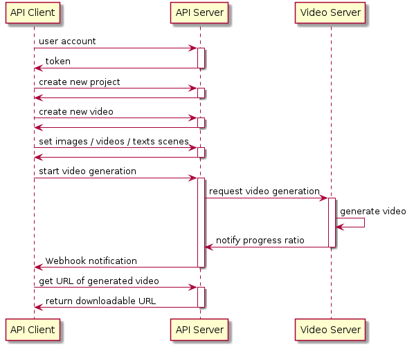

RICHKA Web API
Abstract
RICHKA provides two interfaces with GUI and Web API to enables users to easily create video data with setting images, videos and texts and generating videos. In this post, we describe the Web API whose architecture conforms to the general REST architecture. It enables users to integrate the primary features of RICHKA into their systems such as smartphone application to generate videos with using the photo album.
The main functions of Web API are below, and they are built with Django REST Framework.
- Authenticate API clients and publish API tokens
- Get list of projects/videos
- Create projects / videos
- Set images / videos / texts to scenes of videos
- Generate video files
The basic sequence diagram to generate videos is below.

Client Authentication
To call Web API, API clients need to set tokens TOKEN_AUTH in every
request. The tokens are published with sending HTTP POST to
/api/v1/api-token-auth/ with the account information. API clients
should store the tokens into their database to suppress this API call
every time.
curl -X POST https://API_HOST/api/v1/accounts/login/ \
-H 'Content-Type: application/json' \
-d '{
"email": "USER_EMAIL",
"password": "USER_PASSWORD"
}'
Create New Project
A new project directory is created with sending HTTP POST to
/api/v1/projects/ as below.
curl -X POST https://API_HOST/api/v1/projects/ \
-H 'Authorization: Token TOKEN_AUTH' \
-H 'Content-Type: application/json' \
-d '{
"name": "New Project",
"is_shared": true
}'
The ID of the created project PROJECT_ID is returned to the clients.
The detail information of the project can be obtained with sending
HTTP GET to /v1/projects/PROJECT_ID/.
Get a list of video templates
API clients can get a list of available template IDs TEMPLATE_ID with
sending HTTP GET to /api/v1/template_groups/.
curl -X GET https://API_HOST/api/v1/template_groups/ \
-H 'Authorization: Token TOKEN_AUTH' \
-H 'Content-Type: application/json'
Create New Video Data
A new video data is created with sending HTTP POST to
/api/v1/videos/ with specifying the created project id PROJECT_ID
and the selected video template TEMPLATE_ID. The ID of the created
video data VIDEO_ID is returned to the clients.
curl -X POST https://API_HOST/api/v1/videos/ \
-H 'Authorization: Token TOKEN_AUTH' \
-H 'Content-Type: application/json' \
-d '{
"name": "your video title",
"project_id": "PROJECT_ID",
"template_id": TEMPLATE_ID
}'
Set Images / Videos / Texts into Scenes

For 1st step, API clients need to upload the image/video files to be
available in the video data with VIDEO_ID.
Then IMAGE_NAME_1 and IMAGE_NAME_2 are returned to the clients.
curl -X POST https://API_HOST/api/v1/videos/VIDEO_ID/images/ \
-H 'Authorization: Token TOKEN_AUTH' \
-H 'content-type: multipart/form-data; boundary=----WebKitFormBoundary7MA4YWxkTrZu0gW' \
-F 'files[]=@/path/to/image/1.png' \
-F 'files[]=@/path/to/image/2.jpeg'
After uploading the file contents, API clients can set the images into
scenes of the video data with using the identifiers IMAGE_NAME_1 and
IMAGE_NAME_2.
curl -X PUT https://API_HOST/api/v1/videos/VIDEO_ID/ \
-H 'Authorization: Token TOKEN_AUTH' \
-H 'Content-Type: application/json' \
-d '{
"name": "New video'\''s name",
"bgm_file": BGM_ID,
"memo": "New Memo",
"slides": [
{
"index": 0,
"text": "テキスト",
"image_name": "IMAGE_NAME_1"
},
{
"index": 1,
"text": "テキスト",
"image_name": "IMAGE_NAME_2"
}
]
}'
Generate Videos

After the scenes have been set up, API clients can request to start the video generation with video servers.
curl -X POST https://API_HOST/api/v1/videos/VIDEO_ID/generate/ \
-H 'Authorization: Token TOKEN_AUTH' \
-H 'Content-Type: application/json'
When the video generation has been done, a Webhook URL registered in
the account setting page beforehand will be called back with sending
VIDEO_ID.
{
video_id: VIDEO_ID,
user_id: xxxxx,
time: 2020-01-01 01:02:03,
webhook_id: 1234,
type: webhook
}
Download Video Contents
API clients can get the downloadable S3 URLs with sending HTTP GET
with /api/v1/videos/VIDEO_ID/.
curl -X GET https://API_HOST/api/v1/videos/VIDEO_ID/ \
-H 'Authorization: Token TOKEN_AUTH' \
-H 'Content-Type: application/json'